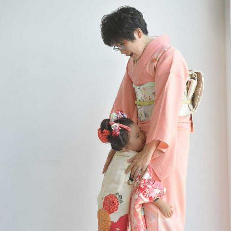

プロフィール
hiratsuka-r
h
i
r
a
t
s
u
k
a
-
r

こんにちは！hiratsuka-rと申します。
2012年からお仕事としてフロントエンド・バックエンド両方の開発者をしています。日々仕事をすればするほど学ぶことがたくさん出てきて、まだ自信を持っては言えないのですが…ゆくゆくは"フルスタックな開発者です！"と名乗ってみたいと思っています。
現在は特定の会社に所属せず、フリーランスとしてお仕事を請け負っています。もし面白そうなお話があればぜひ声をかけてください！
1989年生まれ埼玉県在住、二児の母、家族は夫とおてんば娘とやんちゃ坊主。趣味は食べ歩き、散歩ガチ勢、和服の着付け。放送大学 情報コースにて学位取得に向けて邁進中。
現在までのあゆみ
-
Yahoo!ジオシティーズにてサイト運営を始める。
題材は当時の趣味だったキャンプ・散歩の体験記。 -
高等専門学校 物質工学科に進学。
在学中は白衣で試験管を振りつつ、アルバイト先の映画館で作品を観ることに没頭する。 -
アルバイト先の企業サイトを作成。
これを皮切りに複数企業のサイト運営保守に関わる。ご要望を伺いながら喜ばれるページを作りあげることの面白さに目覚める。 -
進路変更しウェブ制作の専門学校に進学。
在学中はデザインやページ制作の基礎を学びつつ、ひたすら作品作りに没頭する。 -
ポートフォリオ片手に就職活動中、東日本大震災に見舞われる。
-
新卒にてシステム開発会社に就職。
バックエンド ときどき インフラなエンジニアとしてシステム開発に関わる。 -
2社目のシステム開発会社に転職。
フロントエンド ときどき コーダーなエンジニアとしてシステム開発に関わる。 -
フリーランスとして独立。
途中出産に伴うブランクを挟みながら、企業様からの開発依頼を請け負っています。
開発スキル・環境
- 言語
- HTML
- CSS (Scss,Sass)
- JavaScript
- TypeScript
- PHP
- Java
- SQL
- フレームワーク
- CakePHP
- Laravel
- React
- Angular
- Riot.js
- WordPress
- HeadlessCMS
- 開発系ツール
- npm
- node.js
- VSCode
- Test (PHPUnit,JUnit)
- TaskRunner (Gulp,webpack,rollup)
- AWS (S3,CloudFront,RDS,DynamoDB等)
- 業務改善系ツール
- GA
- Page Speed Insights
- Lighthouse
- DBMS_XPLAN.DISPLAY_CURSOR
- デザイン系ツール
- Adobe (Ps,Ai,Xd,Dw)
- Figma
- Sketch
などなど..
対応可能な業務
対応可能な時間帯
[平日] 9:30〜17:00 22:00〜24:00